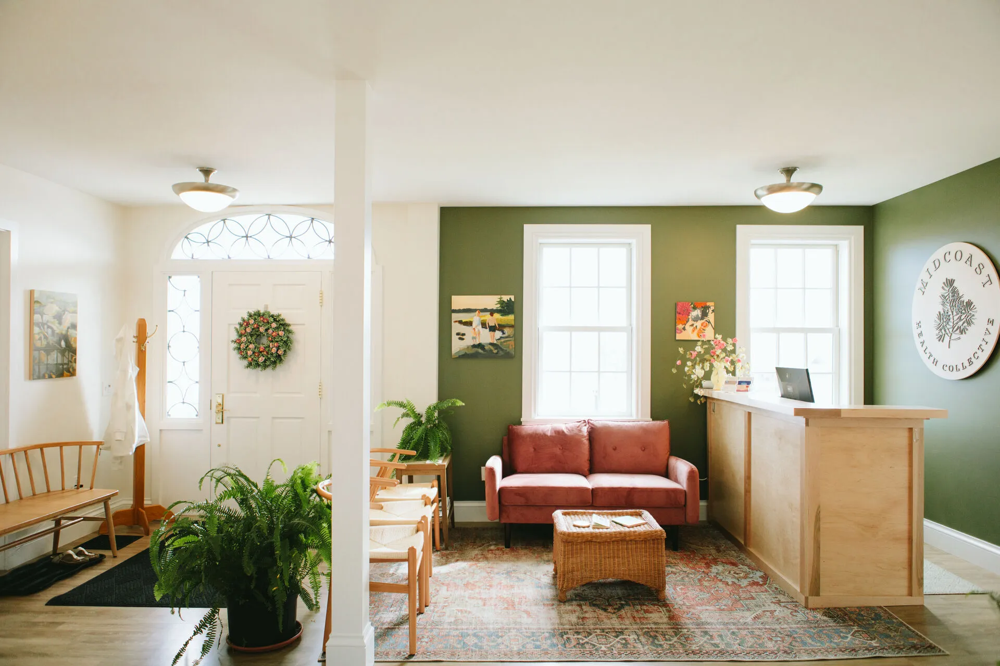

Integrative Women's Health
Care that starts with deep listening
Naturopathic medicine and acupuncture for midlife — practical, grounded, and designed to fit your life.
Learn more about getting started
Find Your Starting Point
Health isn't one thing to fix. It's a lot of systems working together, and right now, some of yours are speaking louder than others.
I help you figure out which one to listen to first, and what we can stabilize while we work on it. That's how you start to feel like yourself again.
You're looking for...
- A provider who truly listens
- Care that honors your whole self
- Clarity amidst conflicting advice
- Real support for this season of life
- Understanding, not just symptom management
Together we can address...
- Anxiety, fatigue, and burnout
- Digestion and sleep challenges
- Fertility and preparing for pregnancy
- Hormonal shifts and what they mean for you
- Thyroid health and energy balance
About
I'm Dr. Katy
I'm a naturopathic doctor and acupuncturist who specializes in midlife women's health. My own experience with PCOS and infertility taught me what it means to want real answers, not band-aids. That's what I offer here.
Meet Dr. KatyKind Words
Let's figure out where to begin
A discovery call is a chance to talk through what's going on and see if we're a good fit.
Book Now